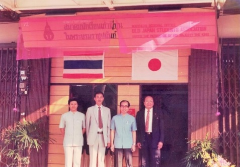
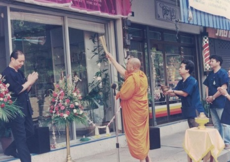
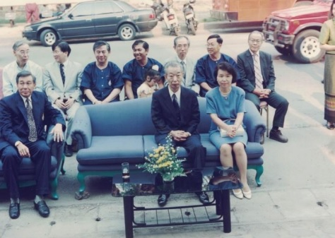

เรื่องราวของสมาคม
มิตรภาพที่เริ่มต้นจากการพบปะ และเติบโตผ่านความผูกพันระหว่างไทย–ญี่ปุ่น
ศูนย์กลางกิจกรรมนักเรียนเก่าญี่ปุ่น ชาวไทย
และเครือข่ายในอาเซียน
เป็นเลิศด้านการเรียนการสอนภาษาและวัฒนธรรมญี่ปุ่นในประเทศไทย
เริ่มต้นการรวมตัว
ประชุมนักเรียนเก่าญี่ปุ่นในเชียงใหม่ เมื่อวันที่ 24 สิงหาคม 2528
เปิดสำนักงานภาคเหนือ
พิธีเปิดสำนักงานภาคเหนืออย่างเป็นทางการ เมื่อวันที่ 22 กุมภาพันธ์ 2530
บ้านของสมาคมในปัจจุบัน
เปิดสำนักงานถนนสามล้าน หน้าวัดพระสิงห์ เมื่อวันที่ 7 เมษายน 2539
สาขาภาคเหนือ
จดทะเบียนแก้ไขข้อบังคับเพิ่มเติมให้มีสำนักงานสมาคมสาขาภาคเหนือ เมื่อวันที่ 3 มิถุนายน 2559
ประวัติสมาคมฉบับเต็มและรายนามประธานตั้งแต่อดีตถึงปัจจุบัน
บทความประวัติจากเว็บไซต์เดิม พร้อมเพิ่มเติมรายนามประธานจนถึงวาระปัจจุบัน
วิสัยทัศน์ : ศูนย์กลางกิจกรรมนักเรียนเก่าญี่ปุ่น ชาวไทยและเครือข่ายในอาเซียน เป็นเลิศด้านการเรียนการสอนภาษาและวัฒนธรรมญี่ปุ่นในประเทศไทย
71 ปี ที่แล้ว เมื่อวันที่ 15 กันยายน 2494 ได้มีการจดทะเบียนจัดตั้งสมาคมนักเรียนเก่าญีปุ่น ในพระบรมราชูปถัมภ์ ที่ กรุงเทพมหานคร และวันที่ 3 มิถุนายน 2559 สมาคมฯก็ได้จดทะเบียนแก้ไขข้อบังคับเพิ่มเติม ให้มีสำนักงานสมาคมสาขาภาคเหนือ ที่จังหวัดเชียงใหม่
ถ้าดูเวลาของการก่อตั้งตามกฎหมาย ดูเหมือนสมาคมฯ สาขาภาคเหนือจะมีอายุได้เพียงไม่กี่เดือน แต่ถ้านับตั้งแต่การก่อร่างสร้างตัวมาจนถึงวันนี้ สาขาภาคเหนือก็ถือกำเนิดเกิดมากว่า 35 ปีแล้ว
เริ่มต้นจากโต๊ะอาหารที่ Mr.Kamihigashi Teruo กงสุลญี่ปุ่น ประจำจังหวัดเชียงใหม่ ได้ปรารถขึ้นมาขณะที่รับประทานอาหารกลางวันร่วมกันกับนักเรียนเก่าญี่ปุ่นสามสี่คน ณ ร้านอาหารญี่ปุ่นแห่งหนึ่งว่า
“เชียงใหม่มีนักเรียนเก่าญี่ปุ่นหลายคนแล้วนะ คนที่ไปอบรมดูงานกลับมาก็หลายคน น่าจะได้รู้จักกัน ที่กรุงเทพมีสมาคมนักเรียนเก่าญี่ปุ่น ที่เชียงใหม่เป็นชมรมก็ได้นี่”
วันนั้นทุกคนก็มีความรู้สึกเหมือนกัน คือ อยากมีโอกาสพบปะสังสรรค์กับเพื่อนๆ ที่กลับมาจากญี่ปุ่น และผู้ที่รับอาสาจะประสานงานเรื่องนี้ต่อก็คือ นายแพทย์ถาวร รัตนศิริ ซึ่งขณะนั้นรับราชการเป็นอาจารย์คณะแพทยศาสตร์ มหาวิทยาลัยเชียงใหม่ หลังจากนั้นก็ใช้เวลานานแรมปี ที่นายแพทย์ถาวร ได้หารือกับเพื่อนๆ ที่เป็นกรรมการสมาคมนักเรียนเก่าญี่ปุ่น ในพระบรมราชูปถัมภ์ หนึ่งในนั้นก็คือ คุณคมกฤต สุตธรรม ซึ่งเดินทางมาเชียงใหม่หลายครั้งเพื่อพบปะกับนักเรียนเก่าญี่ปุ่นกลุ่มเล็กๆ ปรึกษาถึงความเป็นไปได้ในการก่อตั้งสมาคมนักเรียนเก่าญี่ปุ่นภาคเหนือ จนกระทั่งความคิดตกผลึก
สมาคมฯ กรุงเทพซึ่งขณะนั้น พ.อ.วิเชียร บุรณศิริ เป็นนายกสมาคมก็เห็นชอบให้ตั้งเป็น สาขาภาคเหนือ
การรวมตัวกันของนักเรียนเก่าญี่ปุ่นในเชียงใหม่จึงเริมขึ้น โดยมีกรรมการก่อตั้งสมาคม 5 คน ประกอบด้วย นายแพทย์ถาวร รัตนศิริ เป็นประธาน คุณอภิชาติ สุจริตรักษ์ ตัวแทนนักเรียนทุนส่วนตัว คุณจันทร์ดี ชัยรัตน์ ตัวแทนภาคประชาชนที่ไปอบรมที่สถาบัน ARI (Asian Rural Institute) ดร.สุชาติ จิรพรเจริญ และ อาจารย์นาฏยา ตนานนท์ นักเรียนทุนรัฐบาลญี่ปุ่น (Monbusho) เป็นกรรมการ
กรรมการก่อตั้งได้รวบรวมรายชื่อนักเรียน ผู้ที่เคยไปวิจัย ดูงาน และฝึกอบรมที่ประเทศญี่ปุ่นจากที่ทำการทางกงสุลญี่ปุ่น จังหวัดเชียงใหม่ (ชื่อในขณะนั้น) และจัดการประชุมเมื่อวันที่ 24 สิงหาคม 2528 ณ โรงแรมเชียงใหม่ภูคำ ปรากฏว่ามีผู้มาร่วมประชุมเป็นจำนวนมาก ที่ประชุมได้เลือก นายแพทย์ถาวร รัตนศิริ เป็นประธานสมาคมฯ สาขาภาคเหนือ และเลือกตัวแทนจากหน่วยงานต่าง ๆ อาทิ มหาวิทยาลัยเชียงใหม่ วิทยาลัยครู (ชือในขณะนั้น) สถาบันเทคโนโลยีราช
มงคลล้านนา และศูนย์ส่งเสริมอุตสาหกรรมภาคเหนือ เป็นกรรมการ ในระยะเริ่มแรก คุณอภิชาติ สุจริตรักษ์ อนุญาตให้ใช้ บริษัทนิด้าทัวร์ เป็นที่ทำการชั่วคราว จนกระทั่งสมาคมนักเรียนเก่าญี่ปุ่นฯ กรุงเทพเห็นชอบให้เช่าตึกแถว ด้านทิศเหนือของศาลากลางเก่า (ปัจจุบันเป็นหอศิลปวัฒนธรรมเมืองเชียงใหม่) โดยให้ใช้ชื่อว่า สำนักงานภาคเหนือ สมาคมนักเรียนเก่าญี่ปุ่น ในพระบรมราชูปถัมภ์ แทนการเป็นสาขาภาคเหนือ เนื่องจากมีข้อขัดข้องทางกฎหมายบางประการ
และนายแพทย์ถาวรฯ ก็ได้ขอรับเงินสนับสนุนจาก Japan International Good Will Foundation สำหรับเป็นค่าตกแต่งภายในที่ทำการสำนักงานภาคเหนือแห่งแรก มีห้องเรียนภาษาญี่ปุ่น 2 ห้อง ซึ่งถูกออกแบบให้มีบรรยากาศแบบญี่ปุ่น และเปิดใช้อย่างไม่เป็นทางการเมื่อวันที่ 10 ธันวาคม 2529 จนเมื่อวันที่ 22 กุมภาพันธ์ 2530 จึงได้ทำพิธีเปิดอย่างเป็นทางการ โดยได้รับเกียรติจาก Mr.Takeo Fukuda อดีตนายกรัฐมนตรีญี่ปุ่น เป็นประธานในพิธี

(สมาคมนักเรียนเก่าญี่ปุ่น ในพระบรมราชูปถัมภ์ สาขาภาคเหนือปัจจุบัน)
ณ ตึกแถวข้างอนุสาวรีย์สามกษัตริย์
กลาง Mr.Takeo Fukuda อดีตนายกรัฐมนตรีญีปุ่น และภริยา,
คุณคมกฤต สุตธรรม กรรมการ ส.น.ญ., พ.อ.วิเชียร บุรณศิริ นายกสมาคมฯ
และ อ.นาฎยา ตนานนท์ กรรมการ ส.น.ญ.น.


ณ ตึกแถว ข้างอนุสาวรีย์สามกษัตริย์
จากซ้าย คุณอภิชาติ สุจริตรักษ์ คุณคมกฤต สุตธรรม นายแพทย์ถาวร รัตนศิริ และ พ.อ.วิเชีย บุรณศิริ
จากนั้นจากจำนวนสมาชิกในระยะเริ่มแรกเพียงไม่กี่สิบคนก็ค่อยๆ เพิ่มขึ้น ทำให้กิจกรรมของสำนักงานภาคเหนือเพิ่มมากขึ้นตามไปด้วย ทั้งกิจกรรมระหว่างสมาชิกด้วยกัน และกิจกรรมที่เป็นการเผยแพร่ภาษาและวัฒนธรรม โดยมีการเปิดสอนภาษาญี่ปุ่นแก่นักเรียน นักศึกษาและผู้สนใจทั่วไป ทั้งในจังหวัดเชียงใหม่และจังหวัดใกล้เคียง การจัดสอบวัดระดับความรู้ภาษาญี่ปุ่นและการจัดงานแนะแนวการศึกษาต่อประเทศญี่ปุ่น ตลอดจนจัดกิจกรรมแลกเปลี่ยนวัฒนธรรมกับชาวญี่ปุ่น จึงทำให้สำนักงานคับแคบไป กรรมการบริหารสำนักงานภาคเหนือในช่วงปี 2538-2540 ซึ่งมีคุณสหะ ปิติพัฒน์ เป็นประธาน จึงได้หารือกับสมาคมนักเรียนเก่าญี่ปุ่นฯ กรุงเทพ ขอซื้ออาคารที่ใหญ่กว่าเดิมเพื่อเป็นที่ทำการของ
สำนักงานภาคเหนือ ซึ่งทางสมาคมนักเรียนเก่าญี่ปุ่นฯ กรุงเทพ ก็เห็นชอบให้ซื้ออาคารสามชั้น หน้าวัดพระสิงห์วรมหาวิหาร ถ.สามล้าน ต.พระสิงห์ อ.เมือง จ.เชียงใหม่ ซึ่งเป็นทำเลที่เหมาะสำหรับทำกิจกรรมต่างๆ ของสมาคม โดยมีเงื่อนไขว่า สมาคมนักเรียนเก่าญี่ปุ่นฯ กรุงเทพจะชำระเงินค่าอาคารให้ก่อน แล้วสำนักงานภาคเหนือผ่อนชำระคืนในอัตราและเวลาที่กำหนด จึงเป็นอันว่า สำนักงานภาคเหนือมีที่ทำการถาวร และได้ทำพิธีเปิดอย่างเป็นทางการ เมื่อวันที่ 7 เมษายน 2539


คุณฉัตรชัย ขุมทรัพย์ อดีตนายกสมาคมฯ และกรรมการ


ท่านกงสุลญีปุ่น และภริยา, คุณสุรพงศ์ ชยุตสาหกิจ อุปนายกฯ,
ดร.สำราญ ชูดวงเงิน กรรมการ ส.น.ญ., คุณเชี่ยวเวทย์ ยิ้มศิริกุล กรรมการ ส.น.ญ./สมาชิก
ตลอดระยะเวลา 31 ปี ของการเป็นสมาคมนักเรียนเก่าญี่ปุ่น ในพระบรมราชูปถัมภ์ สาขาภาคเหนือ มีสมาชิก 332 คน
มีกรรมการบริหารมาแล้ว 16 ชุด ทุกชุดมีความพยายามที่จะดำเนินงานให้เป็นไปตามวัตถุประสงค์ของการก่อตั้งสมาคม ไม่ว่าความมุ่งมั่นในการสร้างความสัมพันธ์อันดี และช่วยเหลือซึ่งกันและกันระหว่างสมาชิก การเผยแพร่ภาษาและวัฒนธรรมญี่ปุ่น ความร่วมมือกับสถานกงสุลใหญ่ญี่ปุ่น ณ นครเชียงใหม่ สมาคมชาวญี่ปุ่น ชมรมผู้พำนักระยะยาวเชียงใหม่ (Chiang Mai Long Stay Life Club) ตลอดจนองค์กรต่างๆ ในการจัดกิจกรรมที่เป็นประโยชน์แก่ทั้งชาวไทยและชาวญี่ปุ่น และที่สำคัญสามารถหารายได้ที่จะดูแลสำนักงานภาคเหนือได้อย่างพอเพียง
จากมิตรภาพบนโต๊ะอาหารของคนไม่กี่คน ได้ทอดยาวจนเกิดมิตรภาพและไมตรีจิตระหว่างนักเรียนเก่าญีปุ่นจำนวนมาก ขอบคุณท่านกงสุลใหญ่ญี่ปุ่นทุกท่านที่มีน้ำใจและไมตรีให้กับสมาคมนักเรียนเก่าญี่ปุ่น สาขาภาคเหนือ มาโดยตลอด ขอบคุณคณะกรรมการบริหารสมาคมนักเรียนเก่าญี่ปุ่น ในพระบรมราชูปถัมภ์ สำนักงานกรุงเทพ ที่เข้าใจและช่วยสนับสนุนในทุกๆ ด้าน จนทำให้สำนักงานภาคเหนือค่อยๆ เติบโตจนเป็นสาขาภาคเหนือในปัจจุบัน
ตลอดระยะเวลาที่าผ่านมา ทางสมาคมฯ กรุงเทพฯ ก็เปรียบเสมือน (สมาคมฯ พี่) ช่วยสนับสนุนส่งเสริมที่ทำให้การจัดตั้งสมาคมสาขาภาคเหนือ (สมาคมฯ น้อง) เป็นการจัดตั้งและจดทะเบียนอย่างสมบูรณ์ เมื่อวันที่ 3 มิถุนายน 2559 โดยหัวเรือใหญ่ คือ ดร.สำราญ ชูดวงเงิน นายกสมาคมฯ กรุงเทพ และ รศ.ดร.ประกิจ ตังติสานนท์ อุปนายกฝ่ายพัฒนาองค์กรและบุคลากร และที่ผ่านมาเมื่อวันที่ 23 กรกฎาคม 2559 ได้ทำพิธีเปิดป้ายสมาคมฯ อย่างเป็นทางการ โดยมีคณะกรรมการสมาคมฯ กรุงเทพ มาร่วมเป็นสักขีพยาน เป็นไปด้วยบรรยากาศที่อบอุ่น

เมื่อวันที่ 23 กรกฎาคม 2559

รายนามประธานกรรมการบริหาร
สมาคมนักเรียนเก่าญี่ปุ่น ในพระบรมราชูปถัมภ์ สาขาภาคเหนือ
| 1 | นพ.ถาวร | รัตนะสิริ | พ.ศ. 2528-2530 |
| 2 | นพ.ถาวร | รัตนะสิริ | พ.ศ. 2530-2532 |
| 3 | ผศ.ดร.ชูชีพ | ประพุทธ์พิทยา | พ.ศ. 2532-2534 |
| 4 | ผศ.ดร.ชูชีพ | ประพุทธ์พิทยา | พ.ศ. 2534-2536 |
| 5 | ดร.สุรศักดิ์ | บำรุงวงศ์ | พ.ศ. 2536-2538 |
| 6 | คุณสหะ | ปิติพัฒน์ | พ.ศ. 2538-2540 |
| 7 | อ.นาฏยา | ตนานนท์ | พ.ศ. 2540-2542 |
| 8 | คุณวังนคร | ไชยมงคล | พ.ศ. 2542-2544 |
| 9 | ผศ.ดร.ชูชีพ | ประพุทธ์พิทยา | พ.ศ. 2544-2546 |
| 10 | ผศ.ดร.ชูชีพ | ประพุทธ์พิทยา | พ.ศ. 2546-2548 |
| 11 | คุณยศ | ไชยพันธุ์ | พ.ศ. 2548-2550 |
| 12 | ผศ.นาฏยา | ตนานนท์ | พ.ศ. 2550-2552 |
| 13 | รศ.ดร.สุกิจ | ขันธปราบ | พ.ศ. 2552-2554 |
| 14 | ผศ.ดร.ชูชีพ | ประพุทธ์พิทยา | พ.ศ. 2554-2556 |
| 15 | ผศ.ดร.ชูชีพ | ประพุทธ์พิทยา | พ.ศ. 2556-2558 |
| 16 | ผศ.วลัยพร | กาญจนการุณ | พ.ศ. 2558-2560 |
| 17 | ผศ.วลัยพร | กาญจนการุณ | พ.ศ. 2560-2562 |
| 18 | ผศ.ธนานัทธ | ปัญโญ | พ.ศ. 2562-2564 |
| 19 | ผศ.ธนานัทธ | ปัญโญ (รักษาการ) | พ.ศ. 2564-2565 |
| 20 | ผศ.ธนานัทธ | ปัญโญ | พ.ศ. 2565-2567 |
| 21 | ผศ.ดร.ธนียา | เจติยานุกรกุล | พ.ศ. 2567–2569 |
| 22 | ผศ.ดร.ธนียา | เจติยานุกรกุล | พ.ศ. 2569–2571 (ปัจจุบัน) |